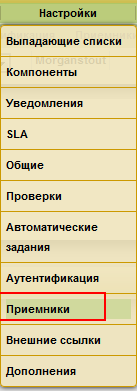
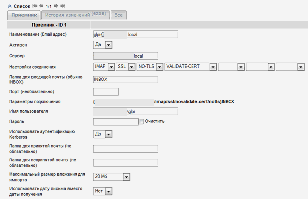
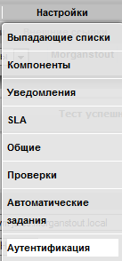
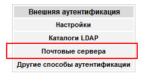
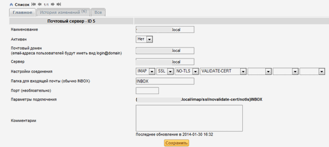

GLPI прием заявок через почту.
Дата: 05.05.2015 Автор Admin
В данной статье мы рассмотрим как настроить регистрацию заявок через электронную почту в helpdesk системе GLPI.
Почтовый приемник настраивается в настройки -> Приемники

Добавляем через + новый приемник, и выполняем настройки почтового ящика:

С этими настройками сервер корректно отправляет отбивки.
Настройка регистрации пользователя по отправке письма.
Открываем настройки-> Аутентификация

Выбираем почтовые сервера

Через + создаем новый почтовый сервер

Теперь, когда пользователь отправит email на адрес GLPI, система зарегистрирует его как пользователя и создаст заявку от имени пользователя.
Пользователь может отвечать на заявку через email.
Related posts:
Метки: GLPI
Комментарии